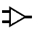
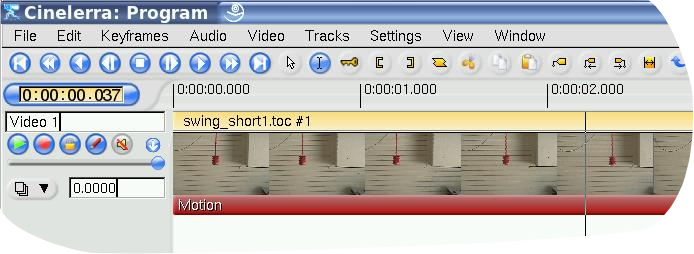
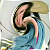

mute toggle next to each
track for whom you do not want to mix on the output.
mute toggle next to each
track for whom you do not want to mix on the output.
| [ << ] | [ >> ] | [Top] | [Contents] | [Index] | [ ? ] |
These are layered under the track they apply to. They process the track when the track is played back, with no permanent storage of the output except when the project is rendered.
All the realtime effects are listed in the resource window, divided into two groups: audio effects and video effects. Audio effects should be dragged from the resource window onto audio tracks. Video effects should be dragged onto video tracks.
If there is data on the destination track, the effect is applied to the entire track. If there is no data on the track the effect is deleted. Finally, if a region of the track is selected the effect is pasted into the region, regardless of whether there is data.
Some of the effects do not process data but synthesize data. In the case of a synthesis effect, you will want to select a region of the track so the dragging operation pastes it without deleting it.
When dragging more than one effect onto a track, you will see the effects layering from top to bottom, on the bottom of the track. When the track is played back, effects are processed from top to bottom. The output of the top effect becomes the input of the bottom effect and so on and so forth.
In addition to dragging from the resource window, effects may be applied to a track by a popup menu. Right click on a track and select Attach effect from the popup. The attach effect dialog gives you more control than pure dragging and dropping. For one thing, the attach effect dialog lets you attach two more types of effects: shared effects and shared tracks. Select a plugin from the Plugins column and hit Attach under the plugins column to attach it. The effect is the same as if the effect was dragged from the resource window.
When an effect exists under a track, it often needs to be configured. Go to the effect and right click on it to bring up the effect popup. In the effect popup is a show option. The show option causes the GUI for the effect to appear under the cursor. Most effects have GUI's but some do not. If the effect does not have a GUI, nothing pops up when the show option is selected. When you tweak parameters in the effect GUI, the parameters normally affect the entire duration of the effect.
The two other effect types supported by the Attach Effect dialog are recycled effects. In order to use a recycled effect, three requirements must be met:
In the case of a shared effect, these conditions must be true. In the case of a shared track, there merely must be another track on the timeline of the same type as the track you are applying an effect to. If you right clicked on a video track to attach an effect, there will not be anything in the shared tracks column if no other video track exists. If you right clicked on an audio track there will not be anything in the shared track column if no other audio track exists.
If shared effects or shared tracks are available, they appear in the shared effects and shared tracks columns. The attach button under each column causes anything highlighted in the column to be attached under the current track.
Shared effects and shared tracks allow very unique things to be done. In the case of a shared effect, the shared effect is treated like a copy of the original effect except in the shared effect the GUI can not be brought up. All configuration of the shared effect is determined by the GUI of the original effect and only the GUI of the original effect can be brought up.
When a shared effect is played back, it is processed just like a normal effect except the configuration is copied from the original effect. Some effects detect when they are being shared, like the reverb effects and the compressor. These effects determine what tracks are sharing them and either mix the two tracks together or use one track to stage some value. The reverb mixes tracks together to simulate ambience. The compressor uses one of the sharing tracks as the trigger.
When an original track has a shared track as one of its effects, the shared track itself is used as a realtime effect. This is more commonly known as bouncing tracks but Cinelerra achieves the same operation by attaching shared tracks. The fade and any effects in the shared track are applied to the original track. Once the shared track has processed the data, the original track performs any effects which come below the shared track and then composites it on the output.
In addition, once the shared track has processed the output of the original
track like a realtime effect, the shared track mixes itself into the output
with it is settings for pan, mode, and projector. Thus, two tracks are mixing
the same data on the output. Most of the times you do not want the shared track
to mix the same data as the original track on the output. You want it to stop
right before the mixing stage and give the data back to the original track. Do
this by enabling the mute toggle next to each
track for whom you do not want to mix on the output.
Suppose you were making video and you did want the shared track to composite the original track's data on the output a second time. In the case of video, the video from the shared track would always appear under the video from the original track, regardless of whether it was on top of the original track. This is because shared tracks are composited in order of their attachment. Since it is part of the original track it has to be composited before the original track is composited.
Many operations exist for manipulating effects once they are in the timeline. Because mixing effects and media is such complex business, the methods used in editing effects are not as concise as cutting and pasting. Some of the editing happens by dragging in/out points, some of the editing happens through popup menus, and some of it happens by dragging effects.
Normally when you edit tracks, the effects follow the editing decisions. If you cut from a track, the effect shrinks. If you drag edit in/out points, the effect changes length. This behavior can be disabled by selecting Settings->edit effects in the project window. This decouples effects from editing operations, but what if you just want to edit the effects?
Move the timeline cursor over the effect borders until it changes to a resize left or resize right icon. In this state, if you drag the end of the effect, it performs an edit just like dragging the end of a track does.
The three editing behaviors of track trimming apply to effect trimming and they are bound to the mouse buttons that you set in interface preferences. See section Interface. When you perform a trim edit on an effect, the effect boundary is moved by dragging on it. Unlike track editing, the effect has no source length. You can extend the end of an effect as much as desired without being limited.
Also unlike track editing, the starting position of the drag operation does not bind the edit decision to media. The media the effect is bound to does not follow effect edits. Other effects, however, do follow editing decisions made on an effect. If you drag the end of an effect which is lined up to effects on other tracks, the effects on the other tracks will be edited while the media stays the same.
What happens if you trim the end of an effect in, leaving a lot of unaffected time near the end of the track? When you drag an effect in from the Resource Window you can insert the effect in the portion of the row unoccupied by the trimming operation. Realtime effects are organized into rows under the track. Each row can have multiple effects.
In some cases you will want a trimming operation to change only one row of effects. This can be achieved by first positioning the insertion point on the start or end of the effect. Then press SHIFT while beginning the trimming operation. This causes the operation to change only one row of effects.
In addition to trimming, you can move effects up or down. Every track can have a stack of effects under it. By moving an effect up or down you change the order in which effects are processed in the stack. Go to an effect and right click to bring up the effect menu. The Move up and Move down options move the effect up or down.
When you are moving effects up or down, be aware that if they are shared as shared effects, any references will be pointing to a different effect after the move operation.
Finally, there is dragging of effects. Dragging effects works just like
dragging edits. You must select the  arrow
to enter drag and drop mode before dragging effects. The effects snap to media
boundaries, effect boundaries, and tracks. Be aware if you drag a reference to
a shared effect, the reference will usually point to the wrong effect
afterwards.
arrow
to enter drag and drop mode before dragging effects. The effects snap to media
boundaries, effect boundaries, and tracks. Be aware if you drag a reference to
a shared effect, the reference will usually point to the wrong effect
afterwards.
Right click on an effect to bring up a menu for the effect. Select attach... to change the effect or change the reference if it is a shared effect.

Contrary to computer science experience, the audio compressor does not reduce the amount of data required to store the audio. The audio compressor reduces the dynamic range of the audio. In Cinelerra the compressor actually performs the function of an expander and compressor.
The compressor works by calculating the maximum sound level within a certain time period of the current position. The maximum sound level is taken as the input sound level. For every input sound level there is an output sound level specified by the user. The gain at the current position is adjusted so the maximum sound level in the time range is the user specified value.
The compressor has a graph which correlates every input sound level to an output level. The horizontal direction is the input sound level in dB. The vertical direction is the output sound level in dB. The user specifies output sound levels by creating points on the graph. Click in the graph to create a point. If 2 points exist, drag one point across another point to delete it. The most recent point selected has its vales displayed in textboxes for more precise adjustment.
To make the compressor reduce the dynamic range of the audio, make all the output values greater than the input values except 0 dB. To make the compressor expand the dynamic range of the audio, make all the output values except 0 dB less than the input values. The algorithm currently limits all sound levels above 0 dB to 0 dB so to get an overloaded effect put a gain effect before the compressor to reduce all the levels and follow it with another gain effect to amplify all the levels back over 0 dB.
Reaction secs: This determines where in relation to the current position the maximum sound level is taken and how fast the gain is adjusted to reach that peak. It is notated in seconds. If it is negative the compressor reads ahead of the current position to get the future peak. The gain is ramped to that peak over one reaction time. This allows it to hit the desired output level exactly when the input peak occurs at the current position.
If the reaction time is positive the compressor scans only the current position for the gain and ramps gain over one reaction time to hit the desired output level. It hits the output level exactly one reaction time after detecting the input peak.
Decay secs: If the peak is higher than the current level, the compressor ramps the gain up to the peak value. Then if a future peak is less than the current peak it ramps the gain down. The time taken to ramp the gain down can be greater than the time taken to ramp the gain up. This ramping down time is the decay seconds.
Trigger type: The compressor is a multi-channel effect. Several tracks can share one compressor. How the signal from many tracks is interpreted is determined by the trigger type.
The Trigger type uses the value supplied in the Trigger textbox as the number of the track to use as input for the compressor. This allows a track which is not even heard to determine the loudness of the other tracks.
The Maximum trigger takes the loudest track and uses it as the input for the compressor.
The Total trigger type adds the signals from all the tracks and uses the total as the input for the compressor. This is the most natural sounding compression and is ideal when multiple tracks are averaged into single speakers.
Trigger: The compressor is a multichannel effect. Several tracks can share one compressor. Normally only one track is scanned for the input peak. This track is specified by the Trigger. By sharing several tracks and playing with the trigger value, you can make a sine wave on one track follow the amplitude of a drum on another track for example.
Smooth only: For visualizing what the compressor is doing to the sound-level, this option causes it to replace the sound wave with just the current peak value. It makes it very easy to see how reaction secs affects the detected peak values.

Just tell how much seconds you want to delay the video track.

FIXME

FIXME
FIXME

FIXME

FIXME

FIXME

FIXME
FIXME

FIXME

This effect reads audio directly from the soundcard input. It replaces any audio on the track so it is normally applied to an empty track.
To use Live Audio, highlight a horizontal region of an audio track or define in and out points. Then drop the Live Audio effect into it. Create extra tracks and attach shared copies of the first Live Audio effect to the other tracks to have extra channels recorded.
Live Audio uses the sound driver selected in Settings->Preferences->Playback->Audio Out for recording, but unlike recording it uses the playback buffer size as the recording buffer size and it uses the project sample rate as the sampling rate.
These settings are critical since some sound drivers can not record in the same sized buffer they play back in. Live audio has been most reliable when ALSA is the recording driver and the playback fragment size is 2048.
Drop other effects after Live Audio to process soundcard input in realtime.
Now the bad news. With live audio there is no read-ahead, so effects like compressor will either delay if they have read-ahead enabled or playback will under-run.
Another problem is sometimes the recording clock on the soundcard is slightly slower than the playback clock. The recording eventually falls behind and playback sounds choppy.
Finally, live audio does not work in reverse.

FIXME

FIXME

Like the time stretching methods, there are three pitch shifting methods: Pitch shift, Resample, and Asset info dialog. Pitch shift is a realtime effect which can be dragged and dropped onto recordable audio tracks. Pitch shift uses a fast Fourier transform to try to change the pitch without changing the duration, but this introduces windowing artifacts.
Because the windowing artifacts are less obtrusive in audio which is obviously pitch shifted, Pitch shift is mainly useful for extreme pitch changes. For mild pitch changes, use Resample from the Audio->Render Effect interface. Resample can change the pitch within 5% without a noticeable change in duration.
Another way to change pitch slightly is to go to the Resources window, highlight the media folder, right click on an audio file, click on Info. Adjust the sample rate in the Info dialog to adjust the pitch. This method also requires left clicking on the right boundary of the audio tracks and dragging left or right to correspond to the length changes.

Apply reverse audio to an audio track and play it backwards. The sound plays forward.
Be aware when reversing audio that the waveform on the timeline does not reflect the actual reversed output.
FIXME

FIXME

FIXME

FIXME
Most TV broadcasts are received with a 1920x1080 resolution but originate from a 720x480 source at the studio. It is a waste of space to compress the entire 1920x1080 if the only resolvable details are 720x480. Unfortunately resizing 1920x1080 video to 720x480 is not as simple as shrinking it.
At the TV station the original 720x480 footage was first converted to fields of 720x240. Each field was then scaled up to 1920x540. The two 1920x540 fields were finally combined with interlacing to form the 1920x1080 image. This technique allows a consumer TV to display the re-sampled image without extra circuitry to handle 720x480 interlacing in a 1920x1080 image.
If you merely deinterlace the 1920x1080 images, you would end up with resolution of 720x240. The 1080 to 480 effect properly extracts two 1920x540 size fields from the image, resizes them separately, and combines them again to restore a 1920x480 interlaced image. The scale effect must then be applied to reduce the horizontal size to 960 or 720 depending on the original aspect ratio.
The tracks to which 1080 to 480 is applied need to be at 1920x1080 resolution. The project settings in settings->format should be at least 720x480 resolution.
The effect does not know if the first row in the 1920x1080 image belongs to the first row of the 720x480 original. You have to specify what the first row is in the effect configuration.
The output of this effect is a small image in the middle of the original 1920x1080 frame. Use the projector to center the output image in the playback.
Finally, once you have 720x480 interlaced video you can either apply frames to fields of inverse telecine to further recover original progressive frames.

This effect is the one to use if you want to achieve an "old movie" or TV show look. It will put moving lines up and down the movie as well as putting "snow" on the video. Use is along with Brightness/Contrast and Color Balance to make your movie look like a really old black and white movie.

This effect blurs a video track. The parameters are:

If you want to brighten a dark shot, or add light, this is the tool to use. Do not overuse the effect or you risk degrading your video quality. Use the effect along with Keyframing to brighten a long shot that is dark at the beginning but bright at the end. Generally you will want to change the brightness and contrast about the same amount (eg darkness 28 contrast 26) so that your original colors are kept intact.

The video burning effect makes your video "burn" where there are small light colored patches of video, on the edge of a white T-shirt for example. It can be a great asset to a music video and just a great outlet to help free your imagination in your video.

This effect erases pixels which match the selected color. They are replaced to black if there is no alpha channel and transparency if there is an alpha channel. The selection of color model is important to determine the behavior.
Chroma key uses either the lightness or the hue to determine what is erased. Use value singles out only the lightness to determine transparency. Select a center color to erase using the Color button. Alternatively a color can be picked directly from the output frame by first using the color picker in the compositor window and then selecting the Use color picker button. This sets the chroma key color to the current color picker color.
Be aware that the output of the chroma key is fed back to the compositor, so selecting a color again from the compositor will use the output of the chroma key effect. The chroma key should be disabled when selecting colors with the color picker.
If the lightness or hue is within a certain threshold it is erased. Increasing the threshold determines the range of colors to be erased. It is not a simple on/off switch, however. As the color approaches the edge of the threshold, it gradually gets erased if the slope is high or is rapidly erased if the slope is low. The slope as defined here is the number of extra values flanking the threshold required to go from opaque to transparent.
Normally threshold is very low when using a high slope. The two parameters tend to be exclusive because slope fills in extra threshold.
The slope tries to soften the edges of the chroma key but it does not work well for compressed sources. A popular softening technique is to use a maximum slope and chain a blur effect below the chroma key effect to blur just the alpha.
Plugin by Jerome Cornet http://jcornet.free.fr/linux/chromakey.html
This plugin is used to remove a color from a video to composite with another image.
People refer to is as green screen or blue screen process (because of the color that is keyed out).
More information: http://en.wikipedia.org/wiki/Chromakey
Requirements
The subject in the movie should have a good background. The lighting is crucial and good lighting during production will save your hide with much less effort than in post-production. Here we assume that we have a good video, filmed on green (or blue) screen that we want to use. Important: Make sure you are using an color model that has an alpha channel, such as RGBA8, RGBAFloat, YUVA8. To change color model, go to Settings->Format->Color Model.
Usage
As any other effect, add it to the timeline in the main window. You can tweak each parameter in order to improve the keying.
Start with Hue Tolerance at 10%, Min Brightness at 0, Max brightness at 100%, Saturation offset at 0, Min Saturation at 0, In Slope at 0, Out Slope at 0, Alpha Offset at 0 (that's mid-way through), Spill Threshold at 0, Spill Compensation at 100%. At any time, you can check what the Mask looks like by clicking on Show Mask. This will output a black and white image of the mask.

Video Color Balance is a great effect to use along with Brightness/contrast and Hue/Saturation to try and compensate for possible errors in filming (low lighting, etc). It can only do so much without greatly lowering the quality of the video, however. It is just like the color balance effect on a picture editing program, such as GIMP. With it you can change the colors being sent to output CMY (Cyan, Magenta, Yellow) or RGB (Red, Green, Blue).

This effect drops frames from a track which are most similar in order to reduce the frame rate. This is usually applied to a DVD to convert the 29.97 fps video to the 23.97 fps film rate but this decimate effect can take any input rate and convert it to any lower output rate.
The output rate of decimate is the project frame rate. The input rate is set in the decimate user interface. To convert 29.97 fps progressive video to 23.97 fps film, apply a decimate effect to the track. Set the decimate input rate to 29.97 and the project rate to 23.97.
Be aware every effect layered before decimate processes video at the decimate input rate and every effect layered after decimate processes video at the project frame rate. Computationally intensive effects should come below decimate.

The deinterlace effect has evolved over the years to deinterlacing and a whole lot more. In fact two of the deinterlacing methods, Inverse Telecine and Frames to Fields, are separate effects. The deinterlace effect offers several variations of line replication to eliminate comb artifacts in interlaced video. It also has some line swapping tools to fix improperly captured video or make the result of a reverse effect display fields in the right order.

FIXME

FIXME

FIXME

The difference key creates transparency in areas which are similar between 2 frames. The Difference key effect must be applied to 2 tracks. One track contains the action in front of a constant background and another track contains the background with nothing in front of it. Apply the difference key to the track with the action and apply a shared copy of it to the track with the background. The track with the background should be muted and underneath the track with the action and the colormodel should have an alpha channel.
Pixels which are different between the background and action track are treated as opaque. Pixels which are similar are treated as transparent. Change threshold in the difference key window to make more pixels which are not the same color transparent. Change slope to change the rate at which the transparency tapers off as pixels get more different.
The slope as defined here is the number of extra values flanking the threshold required to go from opaque to transparent. A high slope is more useful with a low threshold because slope fills in extra threshold.
Use value causes the intensity of pixels to be compared instead of the color.
Applying a blur to the top track with just the alpha channel blurred can soften the transparency border.
Note: Currently this effect is known to crash when using YUV modes.

DotTV converts gray scale images to set of dots. It is hard to recognize what is shown when your eyes are close to the monitor. This is is part of EffectTV: http://effectv.sourceforge.net

Downsampling is the process of reducing the size of an image by throwing out data, reducing sampling rate.
Parameters refers to:
Horizontal
Horizontal offset
Vertical
Vertical offset
Channels
This effect reads frames at twice the project framerate, combining 2 input frames into a single interlaced output frame. Effects preceding fields to frames process frames at twice the project frame rate. Each input frame is called a field.
Fields to frames needs to know what field corresponds to what lines in the output frame. The easiest way to figure it out is to try both options in the window. If the input fields are the result of a line doubling process like frames to fields, the wrong setting results in blurrier output. If the input fields are the result of a standards conversion process like 1080 to 480, the wrong setting will not make any difference.
The debobber which converts 720x480 interlaced into 1920x1080 interlaced or 1280x720 progressive seems to degrade the vertical resolution to the point that it can not be recovered.

This effect permits to flip a video track (or a portion of) from left to right, right to left, up to down, down to up.
The dialog window is simple, since only the vertical and horizontal parameters are needed.

This plugin applies the operation reverse to the "Fields to Frames" plugin: it extracts the two interlaced fields stored in alternating lines of interlaced source footage and outputs them as separate full frames. The alternating lines missing on each output frame are interpolated. (The naming of this pair of plugins is obviously misleading with respect to the common usage of the terms "field" and "frame"; normally, "fields" denotes the interlaced half images and "frame" denotes the full image).
This plugin is only useful if its output is pulled with doubled framerate with respect to the source footage. One typical usage scenario is to do masking, scaling and translating on interlaced footage without the need to destroy the additional temporal information contained in such source material. This is helpful if your intended target format is interlaced. If on the other hand, you just want to target a progressive display (e.g. you create video for display on computer monitor solely) then it is much more convenient to de-interlace the source material prior to any further processing.
Processing interlaced footage without deinterlacing

In its simplest form, highlight a region of the track to freeze, drop the freeze frame effect on the highlighted region, and the lowest numbered frame in the affected area will play throughout the entire region.
Freezeframe has an enabled option which can be keyframed. Regions of a freeze frame effect which are enabled repeat the lowest numbered frame since the last keyframe. This has unique possibilities.

Raw camera images store colors in a logarithmic scale. The blacks in these images are nearly 0 and the whites are supposed to be infinity. The graphics card and most video codecs store colors in a linear scale but Cinelerra keeps raw camera images in their original logarithmic scale when it renders them. This is necessary because the raw image parser can not always decode the proper gamma values for the images. It also does its processing in 16 bit integers, which takes away a lot of information.
The gamma effect converts the logarithmic colors to linear colors through a gamma value and a maximum value. The gamma value determines how steep the output curve is and the maximum value is where 1.0 in the output corresponds to maximum brightness in the input.
The gamma effect has 2 more parameters to simplify gamma correction. The automatic option causes it to calculate max from the histogram of the image. Use this when making a preview of a long list of images since it changes for every image.
The use color picker option uses the value currently in the color picker to set the max value. Note that every time you pick a color from the compositor window, you need to hit use color picker to apply the new value.

The gradient effect overlays a smooth color gradient on top of every video frame. It is useful for all sorts of background fills, for partially filtering or for adding moving highlights. The Gradient effect can generate linear or circular color fills. For linear fills, you can choose the angle, for circular fills the center of the created gradient pattern. Moreover, you can control the slope of the color transition by selecting a transition function (linear, logarithmic, squared) and by changing the "start" and "stop" radius. Note that both colors used in this color transition can contain an arbitrary Alpha value (transparency). All parameters can be keyed and will be interpolated between keyframes.
Note the following well known problems:
Although GREYCstoration is a rendered plugin, it can be optionally used as a realtime effect. It is important to note, however, that as a realtime effect, GreyCStoration is very slow. More details on the GreyCStoration plugin can be found in the rendered video effects chapter of this guide.

This shows the number of occurrences of each color on a histogram plot.
It is always performed in floating point RGB regardless of the project color-space. The histogram has two sets of transfer parameters: the input transfer and the output transfer.
4 histograms are possible in the histogram viewer. The red, green, blue histograms show the input histograms for red, green, blue and multiply them by an input transfer to get the output red, green, blue. Then the output red, green, blue is scaled by an output transfer. The scaled red, green, blue is converted into a value and plotted on the value histogram. The value histogram thus changes depending on the settings for red, green, blue. The value transfers are applied uniformly to R, G, B after their color transfers are applied.
Select which transfer to view by selecting one of the channels on the top of the histogram.
The input transfer is defined by a graph overlaid on the histogram. The horizontal direction corresponds to every possible input color. The vertical direction corresponds to the output color for every input color. Video entering the histogram is first plotted on the histogram plot, then it is translated so output values now equal the output values for each input value on the input graph.
The input graph is edited by adding and removing any number of points. Click and drag anywhere in the input graph to create a point and move it. Click on an existing point to make it active and move it. The active point is always indicated by being filled in. The active point's input and output color are given in text boxes on top of the window. The input and output color of the point can be changed through these text boxes.
Points can be deleted by first selecting a point and then dragging it to the other side of an adjacent point. They can also be deleted by selecting them and hitting delete.
After the input transfer, the image is processed by the output transfer. The output transfer is simply a minimum and maximum to scale the input colors to. Input values of 100% are scaled down to the output's maximum. Input values of 0% are scaled up to the output minimum.
Input values below 0 are always clamped to 0 and input values above 100% are always clamped to 100%. Click and drag on the output gradient's triangles to change it. It also has textboxes to enter values into.
Enable the automatic toggle to have the histogram calculate an automatic input transfer for the red, green, blue but not the value. It does this by scaling the middle 99% of the pixels to take 100% of the histogram width. The number of pixels permitted to pass through is set by the Threshold textbox. A threshold of 0.99 scales the input so 99% of the pixels pass through. Smaller thresholds permit fewer pixels to pass through and make the output look more contrasty.
Automatic input transfer is calculated for the R, G, and B channels but not the
value.
Plot histogram
Split output

Incoming objects are projected like holovision seen in the movie "STAR WARS" (remember R2-D2's video message projector). To use, push space key and a picture is taken as a background image. Differences between current picture and the background image are recognized as the incoming objects. Use black clothing for best results. This is is part of EffectTV: http://effectv.sourceforge.net

With that effect you can change hue, saturation and value. The parameters are modified using 3 simple sliders.

The interpolate effect tries to create the illusion of a higher frame rate from
source footage of very low framerates by averaging frames over time. It averages
two input frames for each output frame. The input frames are at different times,
resulting in a dissolve for all output frames between the input frames. There
are two ways of specifying the input frames. You can specify an input frame rate
which is lower than the project frame rate. This causes input frames to be taken
at even intervals.
You can also specify keyframe locations as the positions of the input frames.
In this mode the output frame rate is used as the input frame rate and you just
create keyframes wherever you want to specify an input frame.

Note: this effect works only for float color models.
FIXME

This is the most effective deinterlacing tool when the footage is a video
transfer of a film. Here the film was converted from 24 fps to 60 fps. Then
the 60 fps was down-sampled to 30 fps by extracting odd and even lines and
interlacing the lines. The IVTC effect is primarily a way to convert
interlaced video to progressive video. It undoes three patterns of
interlacing.
A AB BC CD D
AB CD CD DE EF
Automatic
The first two options are fixed patterns and affected by the pattern offset and odd field first parameters. The last option creates several combinations of lines for each frame and picks the most progressive combination. It is a brute force algorithm.
This technique does not rely on a pattern like other techniques and is less destructive but the timing is going to be jittery because of the lack of a frame rate reduction. In order to smooth out the timing, you need to follow inverse telecine with a decimate effect.

Also called invert video, it is a method of reversing the colors of a video track.
The three parameters refer to channels (Red, Blue, Green, Alpha)
The lens affect stretches or shrinks to convert lens distorted images to rectilinear images. The most common use is converting fish eye lenses to rectilinear lenses. It is also useful for star tracking.
R, G, B, A Field of view: These determine how much the image is stretched in each channel.
Lock: This causes changes to 1 channel to affect all the channels. This is normally the desired behavior.
Aspect Ratio: This changes the amount of stretching done in the X axis vs the Y axis. To crop less data from stretched images, this allows more stretching to be done on 1 axis without creating black borders in the other axis.
Radius: This determines the size of the stretched region. While adjusting the field of view, black borders may appear. Adjust the radius to shrink or expand the output so black borders are out of frame.
Center X, Y: The center of the stretched region. This is only useful if the image was previously translated by the software so the center of the lens is now off center.
Draw center: This is a visual aid when adjusting the Center X, Y but doesn't affect the results.
Mode: The type of stretching algorithm.
Parameters refer to:

Blur has three styles: Linear, Radial, and Zoom
Parameters refer to:

This effect reads video directly from the capture card input. It replaces any video on the track so it is normally applied to an empty track. The configuration for the capture card is taken from the recording preferences. Go to Settings->Preferences->Recording to set up the capture card.
Go to the Video In section where it says Record driver. It must be set to either Video4Linux2 or IEC 61883. Other video drivers have not been tested with Live Video and probably will not work.
For live video, the selection for File Format and Video needs to be set
to a format the timeline can use. The file format must be Quicktime for
Linux and video recording must be enabled for it. Click on the wrench
 to set the video compression.
to set the video compression.
The video compression depends on the recording driver. For the Video4Linux2 recording driver, the compression must be Motion JPEG A. For the IEC 61883 driver, the compression must be DV. This gets the driver to generate output in a colormodel that the timeline can use.
Some cards provide color and channel settings. Live video takes the color settings from the values set in the Video In window. Go to File->Record to bring up the recording interface and the Video In window. Values set in the Video in window are used by Live Video. Any channels the capture card supports need to be configured in the Video in interface since the same channels are used by the Live Video effect.
With the video recording configured, highlight a horizontal region of a video track or define in and out points. Then drop the Live Video effect into it. Drop other effects after Live Video to process the live video in realtime. For best results, you should use OpenGL and a video card which supports GL shading language. Go to Settings->Preferences->Playback->Video Out to enable the OpenGL driver.
Only one Live Video effect can exist at any time on the timeline. It can not be shared by more than one track.

Sections of video can be looped by dropping a loop effect on them. Contrary to the settings->loop playback option, the loop effects can be rendered where the settings->loop playback option can not be. The loop effects are also convenient for short regions.
The loop effects have one option: the number of frames or samples to loop. This specifies the length of the region to loop starting from either the beginning of the effect or the latest keyframe. The region is replicated for the entire effect.
Every time a keyframe is set in a loop effect, the keyframe becomes the beginning of the region to loop. Setting several keyframes in succession causes several regions to loop. Setting a single keyframe causes the region after the keyframe to be looped throughout the effect, no matter where the keyframe is. The end of an effect can be looped from the beginning by setting the keyframe near the end.

The motion tracker is almost a complete application in itself. The motion tracker tracks two types of motion: translation and rotation. It can track both simultaneously or one only. It can do 1/4 pixel tracking or single pixel tracking. It can stabilize motion or cause one track to follow the motion of another track.
Although the motion tracker is applied as a realtime effect, it usually must be rendered to see useful results. The effect takes a long time to precisely detect motion.
The motion tracker works by using one region of the frame as the region to track. It compares this region between 2 frames to calculate the motion. This region can be defined anywhere on the screen. Once the motion between 2 frames has been calculated, a number of things can be done with that motion vector. It can be scaled by a user value and clamped to a maximum range. It can be thrown away or accumulated with all the motion vectors leading up to the current position.
To save time the motion result can be saved for later reuse, recalled from a previous calculation, or discarded.
The motion tracker has a notion of 2 tracks, the master layer and the target layer. The master layer is where the comparison between 2 frames takes place. The target layer is where motion is applied either to track or compensate for the motion in the master layer.
The intricacies of motion tracking are enough to sustain entire companies and build careers around. The motion tracker in Cinelerra is not as sophisticated as some world class motion trackers but it is enough to sweeten some camcorder footage.
Here is a brief description of the motion tracking parameters:
Since it is a very slow effect, there is a method to applying the motion tracker to get the most out of it. First disable playback for the track to do motion tracking on. Then drop the effect on a region of video with some motion to track. Then rewind the insertion point to the start of the region. Set Action -> Do Nothing. Set Calculation -> Don't calculate. Enable Draw vectors. Then enable playback of the track to see the motion tracking areas.
Enable which of translation motion or rotation motion vectors you want to track. By watching the compositor window and adjusting the Block x,y settings, center the block on the part of the image you want to track. Then set search radius, block size, and block coordinates for translation and rotation.
Once this is configured, set the calculation to Save coords and do test runs through the sequence to see if the motion tracker works and to save the motion vectors. Once this is done, disable playback for the track, disable Draw vectors, set the motion action to perform on the target layer and change the calculation to Load coords. Finally enable playback for the track.
When using a single starting frame to calculate the motion of a sequence, the starting frame should be a single frame with the least motion to any of the other frames. This is rarely frame 0. Usually it is a frame near the middle of the sequence. This way the search radius need only reach halfway to the full extent of the motion in the sequence.
If the motion tracker is used on a render farm, Save coords and previous frame mode will not work. The results of the save coords operation are saved to the hard drives on the render nodes, not the master node. Future rendering operations on these nodes will process different frames and read the wrong coordinates from the node filesystems. The fact that render nodes only visualize a portion of the timeline also prevents previous frame from working since it depends on calculating an absolute motion vector starting on frame 0.
The method described above is 2 pass motion tracking. One pass is used just to calculate the motion vectors. A second pass is used to apply the motion vectors to the footage. This is faster than a single pass because errors in the motion vector calculation can be discovered quickly.
This also allows the motion tracking to use a less demanding colormodel like RGB888 in the scanning step and a more demanding colormodel like RGB Float in the action step. The scanning step takes much longer than action.
This suffers the disadvantage of not being practical for extremely long sequences where some error is acceptable and the picture quality is lousy to begin with, like stabilizing camcorder footage.
The slower method is to calculate the motion vectors and apply them simultaneously. This method can use one track as the motion vector calculation track and another track as the target track for motion vector actions. This is useful for long sequences where some error is acceptable.
With extremely noisy or interlaced footage, applying a blur effect before the motion tracking can improve accuracy. Either save the motion vectors in a tracking pass and disable the blur for the action pass or apply the blur just to the master layer.
A histogram is almost always applied before motion tracking to clamp out noise in the darker pixels. Either save the motion vectors in a tracking pass and disable the histogram for the action pass or apply the histogram just to the master layer.
First, add a motion effect to the track. Drag it from the resource window and drop it directly over the video in Cinelerra's main window. You should see something similar to this:

Then right-click on the motion effect marker in the timeline and select show to see the motion tracker dialog:

Start by looking at your Compositor. You will see some new boxes overlaid on the video. These are important to control the motion tracker. Here is a quick shot of what it will look like when working:

The image above shows the motion tracker losing track of the object because of
a search window that is too small. We will talk about this more later, but
quickly:
Move to the beginning of your video clip
Make sure the motion tracker dialog is open
Look at the Compositor
Start adjusting these four knobs:

Make sure you check Track Translation
Uncheck Track Rotation
Start with knob two - Translation block size - and spin it to get an idea for what is changing. Notice that both boxes resize. Look at the small inside box. Adjust it to the size of the target (the object you want to track). Do not worry if it does not cover the object yet.
Go on to knobs three and four - Block X and Block Y. Use these to put the target designator over the target itself.
Finally, use the top knob - Translation search radius. Expand it to include the full range of travel you expect for the target. If you look back at my original action shot, the search radius was to small and the target moved outside the range. You can test this by playing the timeline and viewing the results (if your machine is fast enough for realtime) or by rendering and viewing the stabilized handle in the output.
Make the first video frame look similar to:

This image shows a lot of detail. Notice that the small frame is centered over the handle and sized to just include it. Those settings are control by knobs two through four. Finally, the outer frame is larger than the back and forth movement of the handle in the entire video clip.
Finally, here are other settings needed to see the effect:

In this section, we will explain how to stabilize a video. Such a need can arise when the video was taken from a vehicle for example.
First select on the timeline the part of the footage you want to stabilize, using the in and out points. Then apply the motion effect on that part of the video.
Select the "Previous frame same block" option. That option is recommended for stabilizing jerky camcorder footage. Its goal is not to "follow" an object. The block stays exactly at the same place during all the effect length.
Enlarge the block and select almost half the size of the video. Select the "Stabilize subpixel" option: it will give a finer stabilization. Reduce the "Maximum absolute offset" value to limit the stabilization amplitude. You probably prefer to get a non-perfect stabilization on some places on the video, than having a very large black border on one side of the picture during big shakes. Set the "Translation search steps" value to 128. Increasing that value will not give a better result, but will considerably increase the rendering time. Make sure the "Draw vectors" option is selected, and render the part of the video where the motion effect is applied.
If the result is good, deselect the "Draw vectors" option. The block and vectors were not drawn anymore on the video. Then, render your video to a `.dv' file, and import it into your project.
You will notice the video is stabilized but there are black borders which appear on sides of the frame. You have to zoom in and define projector keyframes to move the projector around the screen, in order to remove those black borders. The more your footage is jerky, the more you have to zoom in to discard the black borders. That is why the result is better with HDV footage than with DV footage.
This real-time effect takes the X/Y camera automation vectors as input and applies a linear blur trailing the direction of the camera automation to fool the eye into thinking it is seeing a more natural motion. It is mainly designed to remove choppy motion in overlying graphics/SVG.
This plugin is not designed for rendering in non real-time applications, for example to add motion blur frame-by-frame inside an existing live-action video. For the plugin to work, camera automation is required.
Parameters:

This effect makes video tracks appears as a painting. It can be controlled by Radius slider. Intensity of colors can be chosen as option.
This effect can combine several tracks by using the so called Overlayer. This is a basic internal device normally used by Cinelerra to create the (dissolve) transitions and for compositing the final output of every track onto the output bitmap. The Overlayer has the ability to combine one or several image layers on top of a "bottom layer". It can do this combining of images in several different (and switchable) output modes: Normal, Additive, Subtractive, Multiply (Filter), Divide, Max and Replace. For a detailed explanation of the several overlay modes See section Compositing.
Now, the overlay plugin enables the use of this Overlayer device in the middle of any plugin stack, opening endless filtering and processing possibilities. It is only useful as a shared plugin (i.e. a multitrack plugin). So, to use the overlay plugin
In the Overlay Plugin's parameter window you can choose the overlay order, i.e. which track plays the role of the "bottom layer" and which plays the role of the "top layer". For some overlay modes, this can make quite a difference, e.g. the top layer is subtracted from the bottom layer for "Subtractive" mode. Further on, you can choose on which of the tracks to overlay the combined output. (Hint: in most cases, you will want to mute the other track and only retain this combined output).

The perspective effect allows you to change the perspective of an object, and is perfect for making objects appear as if they are fading into the distance.
The Polar effect bends and warps your video in weird ways. Mathematically, it converts your video from either polar coordinates to rectangular coordinates, or the reverse.
For analog video or MPEG (including DVD) output, the maximum range for R,G,B is [16, 235] (8-bit). For YUV, the maximum range for intensity (Y) is [16, 235] (8-bit). This range corresponds to gray levels from 6% to 92%. When rendering, values outside of these ranges will be clipped to these limits.
To render to MPEG, add the RGB-601 effect to all video tracks where material uses the full intensity scale (0-100%), and enable RGB -> 601 compression. Consider adding the Videoscope effect after RGB-601 to see how RGB-601 affects your dynamic range. See section Videoscope.
(To preview how your rendered MPEG would look without RGB-to-601 compression, instead enable 601 -> RGB expansion - you will observe a noticeable contrast increase.)
Although RGB-601 will reduce contrast in your video tracks, the contrast will be restored during MPEG playback.

It creates a whirlpool blur that simulates a swirling camera. You can vary the location, type, and quality of the blur.

ReframeRT changes number of frames in a sequence of video directly from the timeline. It has 2 modes, selected by the 2 toggles in the GUI.
Stretch mode multiplies the current frame number of its output by the scale factor to arrive at the frame to read from its input. If its current output frame is #55 and the scale factor is 2, frame #110 is read from its input. The stretch mode has the effect of changing the length of output video by the inverse of the scale factor. If the scale factor is greater than 1, the output will end before the end of the sequence on the timeline. If it is less than 1, the output will end after the end of the sequence on the timeline. The ReframeRT effect must be lengthened to the necessary length to accommodate the scale factor. Change the length of the effect by clicking on the endpoint of the effect and dragging.
Although stretch mode changes the number of the frame read from its input, it does not change the frame rate of the input. Effects before ReframeRT assume the same frame rate as ReframeRT.
The ReframeRT in stretch mode can be use to create a fast play effect. Select Stretch mode and enter a value greater than 1 to get accelerated playback.
For slow motion effect, use a ReframeRT effect in stretch mode with a value less than 1. Example: you have a clip that you want to put in slow motion. The clip starts at 33.792 seconds and ends at 39.765. The clip is 5.973 seconds long. You want to play it at 4/10ths normal speed. You divide the clip length by the playback speed (5.973/.4) to get a final clip length of 14.9325 seconds. You create an in point at the start of your clip: 33.792 seconds. You put an out point 14.9325 seconds later, at 48.7245 seconds (33.792 + 14.9325). You attach a ReframeRT effect, set it to .4 and stretch. You change the out point at 48.7245 to an in point. You start your next clip after the slow motion effect at the 48.7245 out point.
You can also change the frame rate of the clip if you right click on it in the media viewer and go to Info. If you do not hit the drop down first, you can type in a desired frame rate as well. Cinelerra will pick the right frames out for the project frame rate, effectively doing the time-lapsing as well
Downsample mode does not change the length of the output sequence. It multiplies the frame rate of the output by the scale factor to arrive at a frame rate to read the input. This has the effect of replicating the input frames so that they only change at the scaled frame rate when sent to the output. It does not change the length of the sequence. If the scale factor is 0.5 and the output frame rate is 30 fps, only 15 frames will be shown per second and the input will be read at 15 fps. Downsample is only useful for scalefactors below 1, hence the name downsample.
Downsample mode changes the frame rate of the input as well as the number of the frame to read, so effects before ReframeRT see the frame rate * the scale factor as their frame rate. If the scale factor is 2 and the output frame rate is 30, the input frame rate will be 60 and the input frame number will by doubled. This will not normally do anything but some input effects may behave differently at the higher frame rate.
FIXME
It enables to selectively transfer the Alpha channel or the Components (RGB or YUV) or both from a source track to a target track, partially overwriting the target's contents. It works as a shared plugin. The typical usage scenario is to build up a possibly animated Mask in one track and then to transfer the Alpha channel to another content track.

Media can be reversed on the timeline in realtime. This is not to be confused with using the reverse playback on the transport. The reverse effects reverse the region covered by the effect regardless of the transport direction.
The region to be reversed is first determined by what part of the track the effect is under and second by the locations of keyframes in the effect. The reverse effects have an enabled option which allows you to set keyframes. This allows may possibilities.
Every enabled keyframe is treated as the start of a new reversed region and the end of a previous reversed region. Several enabled keyframes in succession yield several regions reversed independent of each other. An enabled keyframe followed by a disabled keyframe yields one reversed region followed by a forward region.

The Rotate filter can rotate the video in 90 degree increments, reverse and flip the video.

FIXME

FIXME

This plugin is designed to smooth out non-moving areas of a video clip. The smoothing is performed by averaging the color component for each pixel across a number of frames. The smoothed value is used if both the standard deviation and the difference between the current component value and the average component value are below a threshold.
The average and standard deviation are calculated for each of the components of the video. The type of components averaged is determined by the color model of the entire project. The average and standard deviation of the frames can be examined by selecting the specific radio button in the plugin options window.
The region over which the frames are averaged is determined by either a fixed offset or a restart marker system. In a restart marker system, certain keyframes are marked as beginning of sections. Then for each section, the frames surrounding the current frame are used as the frames to average over, except when approaching the beginning and end of a section, whereby the averaging is performed over the N beginning or ending frames respectively.
Common usage:
If you have to select the number of frames you wish to average.

FIXME

FIXME

FIXME

Threshold converts the image to pure luminance, and replaces pixels with one of three colors based on the luminance. Pixels with luminance values in the low range are replaced with black, pixels in the middle range are replaced with white, and pixels in the high range are replaced with black. Color and alpha for each range are configurable and interpolate according to keyframes.
The threshold window shows a histogram of luminance values for the current frame. Click dragging inside the histogram creates a range to convert to white. SHIFT-clicking extends one border of this range. Values for the threshold range can also be specified in the text boxes.
This effect is basically a primitive luminance key. A second track above the track with the threshold effect can be multiplied, resulting in only the parts of the second track within the threshold being displayed.
Time average is one effect which has many uses besides creating nifty trail patterns of moving objects. It is main use is reducing noise in still images. Merely point a video camera at a stationary subject for 30 frames, capture the frames, and average them using time average and you will have a super high quality print. In floating point colormodels, time average can increase the dynamic range of lousy cameras.
Inside the time average effect is an accumulation buffer and a divisor. A number of frames are accumulated in the accumulation buffer and divided by the divisor to get the average.
Because the time average can consume enormous amounts of memory, it is best applied by first disabling playback for the track, dropping the time average in it, configuring time average for the desired number of frames, and re-enabling playback for the track.

This is a warping framework plugin based on this article:
http://www.vision.huji.ac.il/videowarping/HUJI-CSE-LTR-2005-10_etf-tr.pdf
While it is possible to add text to movies by importing still images from The Gimp and compositing them, the Titler allows you to add text from within Cinelerra.
The titler has standard options for font, size, and style. The best font
is a generic, normal font like Arial in a large size.
The titler also has options you will only find in moving pictures. The
Justify operation justifies the text relative to the entire frame. Once
justified, the X and Y offset is applied. This allows text to be justified
while at the same time letting you push it within the title safe region.
The motion type scrolls the text in any of the four directions. When using
this, the text may disappear. Make sure the speed is set to a reasonably high
value (try 150) and move the insertion point along the timeline until the text
is far enough along the animation to reappear. The text scrolls on and scrolls
off.
Setting loop causes the text to scroll completely off and repeat. Without
loop the text scrolls off and never reappears.
The speed of the animation is determined by speed, in pixels per second.
Set it higher to speed up the animation.
Drop shadow draws a black copy of the text to the bottom right of the
original text. This is useful when drawing text over changing video to keep
the border always visible.
In addition to the scrolling, Fade in/Fade out are a second type of
animation. If the fade seconds are 0, no fading is done.
Color picks the color to draw the text in. Usually white is the only
practical color.
Stamp timecode replaces the text with the current position on the timeline
in seconds and frames.
Text options can only be applied to all the text as a whole. If you want your title text formatted with a mixture of fonts, sizes, styles, alignments etc. you need to use multiple tile effects.
The title effect supports keyframes only for Justify and Text, with
no interpolation.
To add subtitles to your movie can set a single title effect and then define keyframes.
If you enable the automatic keyframes toggle  ,
a new keyframe is created each time you edit the text. Check View -> Plugin autos
to make them visible on the timeline. In the text input box you will see the
subtitle displayed under the insertion point.
,
a new keyframe is created each time you edit the text. Check View -> Plugin autos
to make them visible on the timeline. In the text input box you will see the
subtitle displayed under the insertion point.
To correct an existing subtitle, the automatic keyframes toggle must be off.
To adjust the timing of subtitles simply drag the keyframes.
Note: For adding subtitles on a separate stream, you need an external subtitle editor.
See section Adding subtitles, for more information.
To create special effects for your title you can place it on a dedicated track and insert other realtime video effects just under the title effect or/and use camera and projector. Thanks to keyframing you can animate your title and make it change position, size, colour, transparency, texture, shape over time.
For improving playback performances of titles with effects, you can reduce the size of the dedicated track. Right click on the track and select Resize track.... Enter the smallest resolution that still keeps the title visible. For moving your title use the compositor projector.
To included graphical elements like logos, you may want to import your title as a PNG image (alpha channel transparency is possible), move it with camera and projector or add effects.
The titler input is limited to 1023 characters. Titles longer than 1023 characters will be accepted by the software, but they will likely cause lock-ups. See http://bugs.cinelerra.org/show_bug.cgi?id=155|bug 155 to know more.
The X Window system originally did not have a suitable font renderer for video. It also is restricted to the current bit depth. It does not have a convenient way to know which fonts work with the suitable font renderer in the desired bit depth. The easiest way we have found to support fonts in the titler is to have a directory for them at `/usr/lib/cinelerra/fonts'.
The titler supports mainly TTF, true type fonts. It supports others but
TTF are the most reliable. To add true type fonts, copy the `.TTF' files
to the `/usr/lib/cinelerra/fonts' directory. In that directory run
ttmkfdir && mv fonts.scale fonts.dir and restart Cinelerra. The new
fonts should appear. The usage of ttmkfdir changes frequently so this
technique might not work.
If the video is displayed on a consumer TV, the outer border is going to be
cropped by 5% on each side. Moreover, text which is too close to the edge
looks sloppy. Make sure when adding titles to have the title-safe
 tool active in the compositor window.
The text should not cross the inner rectangle.
tool active in the compositor window.
The text should not cross the inner rectangle.

This effect allows displacing, cropping, and/or scaling the source video horizontally and/or vertically. The In and Out parameters operate similar to the camera and projector functions in the Compositor:
This effect supports keyframes so these parameters can change smoothly over time.
You can use this effect for many things such as having a cropped inset clip move across the screen, or have it change size or stretch while doing so. Be forewarned though, that for interlaced footage horizontal displacements are likely to destroy the field order, resulting in all sort of flickering and jumping movements.

This effect applies a traditional darkroom technique, the so called unsharp mask to every video frame. With different parameter values, this can be used to soften or to sharpen the image. Its parameters are:

The Videoscope summarizes intensity and color on a calibrated display. The Videoscope can be used in conjunction with other Cinelerra plugins such as YUV, HUE, Brightness, Color Balance or Histogram to accurately correct video for contrast, clarity, conformance (to normalize various videos shot under different light settings), or for cinematic purposes. The human eye is not specialized to match precise level of light and color, but Videoscope is.
Some thought is being given to having a video scope for recording. Unfortunately, this would require a lot of variations of the video scope for all the different video drivers.
The Videoscope contains two displays: the waveform scope and the vectorscope
The Waveform Scope displays image intensity (luminance) versus image X position. The Waveform Scope appears on the left side of the Videoscope window.
The display is calibrated vertically from 0% intensity (black) at the bottom up to 100% intensity at the top. Each column of pixels in the image corresponds to one column of pixels in the Waveform Scope.

The color bar test image is plotted in the waveform display as a stair step set of lines. In this example, the waveform display and the test image are aligned to show that each stair step corresponds with one color bar.
The waveform display shows the white bar at the 75% level because the colors in the test image are 75% values. The white bar has the highest luminance because it contains all color components. In more complex images, multiple levels in the same column are represented with multiple pixels on the scope.
The Waveform scope helps correct image light levels for contrast range or for conforming light levels on various scenes originally shot on different light settings.
Adjusting light levels (adjusting luminance):
If you are looking for maximum contrast range, adjust the Brightness/Contrast levels to align the darkest point on the scope with the 0% level and the brightest portion with 100%. Anything above 100% is over saturated. Limits which may be highlighted with checkbox controls:
The Vectorscope displays color and color saturation. Each pixel in the source image is drawn as a point on the color wheel. The distance from the center is the color saturation. Gray values are close to the center, and high saturation values are near the perimeter.
The Vectorscope is used with other plugins to correct color, adjust image tint, and apply other effects for cinematic effects, image correction, or to conform images to look the same.

In this example, the top image is white balanced. Vectorscope shows many pixels in the yellow region and few in the white region. To remove the yellow tint, the Color Balance effect is used to first shift the vectorscope plot towards magenta (Mg), and then towards blue (B) until the region previously near the center surrounds the center. In the bottom image, yellow highlights have become white highlights (arrows). Note that the corresponding features in waveform also appear whiter (arrows).
The Vectorscope can also be used to verify that the video output will display properly on various monitors. Any points along the inner radius will be displayed as pure white and any points above the 100% radius, will probably not be correctly displayed on the screen.

The wave effect adds waves on the image.

You can adjust the following parameters:


FIXME

FIXME

FIXME
| [ << ] | [ >> ] | [Top] | [Contents] | [Index] | [ ? ] |
This document was generated on February, 18 2016 using texi2html 1.76.